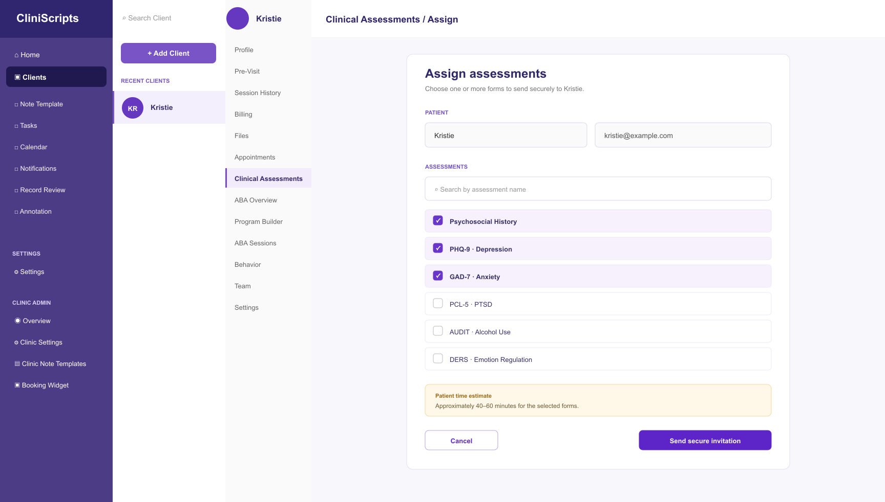
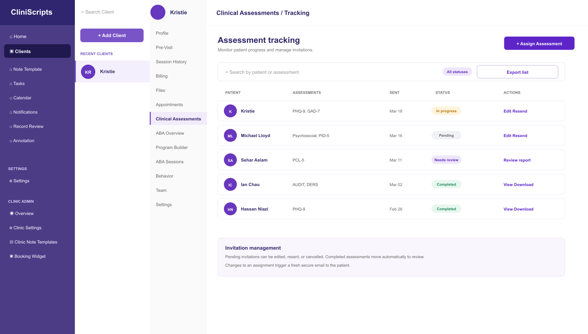
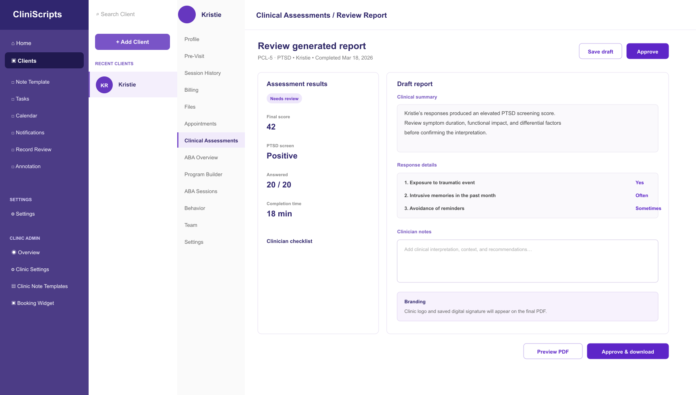

✦ Pre-visit summarySources · 4
Review before the next session
Maya has two active goals and one follow-up requiring attention. The summary is generated from approved records and remains editable by the clinician.
CliniScripts · AI healthcare platform
Product design · EMR workflows · AI interaction · Product QA
I design end-to-end experiences across an AI-enabled clinical platform—from session capture and longitudinal client records to human-reviewed summaries, scheduling and clinic operations.
Maya has two active goals and one follow-up requiring attention. The summary is generated from approved records and remains editable by the clinician.
One item changed since the last visit.
Virtual · 45 minutes
Portfolio reconstruction using fictional names and content; no patient information is shown.
Product Designer
AI healthcare · EMR · Practice operations
Web product, interaction patterns and responsive states
Product, engineering, clinicians, leadership and client teams
01 · Problem
Documentation, client history, follow-ups and scheduling often live across disconnected steps. Clinicians need to move quickly, but AI-assisted decisions must remain understandable, editable and accountable. The product had to serve clinicians and administrators while keeping consequential information easy to scan and act on.
Bring relevant history and next actions into the moment of care.
Make generated output reviewable instead of presenting it as a final answer.
Support roles, skills, availability and clinic-level constraints.
02 · Process
Join client and internal discussions, clarify the request and document clinical, business and technical requirements.
Separate immediate needs from later opportunities and maintain a practical feature backlog with the team.
Map tasks and states, then move from low-fidelity flows to high-fidelity and functional prototypes.
Work with engineering through implementation, review responsive behaviour and refine the experience from feedback.
Selected interface work
These portfolio-safe screens use fictional patient information to show how clinicians assign assessments, monitor progress and review AI-supported reports without losing human oversight.

Searchable assessment selection, clear time expectations and a secure invitation flow help clinicians make a deliberate choice before sending.

Status labels and next actions make pending, in-progress and completed assessments easy to scan.

Results, generated interpretation and clinician notes remain visible together before approval and export.
All names and clinical details shown here are fictional. No patient data is included.
Flow 01 · Capture to documentation
Four entry modes let clinicians begin with an in-person session, telehealth visit, direct dictation or uploaded files. The interaction model keeps AI assistance downstream of the clinical encounter—not in the way of it.
Capture a live clinical session.
Document a remote appointment.
Turn a spoken recap into a draft.
Convert source material into notes.
Flow 02 · Longitudinal client context
The client workspace connects profile details, pre-visit context, session history, appointments, billing, files, care programs, behaviours and the care team. A structured pre-visit summary surfaces active issues, recent changes and follow-ups while retaining source visibility and clinician control.
Progress is steady; review the updated home observation.
New context is available from the last seven days.
One action remains open from the previous session.
Flow 03 · Explainable AI scheduling
The matching workflow combines client, time, location, required credential, specialty and session type. Clinic rules add supervision ratios, utilization targets, overtime policy and continuity preferences so a recommendation can reflect operational reality.
Speech-language pathologist
Recommendation supports staff judgment; the coordinator confirms the assignment.
Flow 04 · Clinic operations
Clinic administrators can manage practitioners, permissions, templates, scheduling rules, billing and audit activity. I used consistent page anatomy, progressive disclosure and reusable components to make dense operational tools easier to learn.
03 · Execution & contribution
Design evidence
The scope demonstrates systems thinking across clinical and administrative roles while keeping AI-assisted decisions visible, reviewable and grounded in human judgment.
Next case study
Designing from behaviour 02